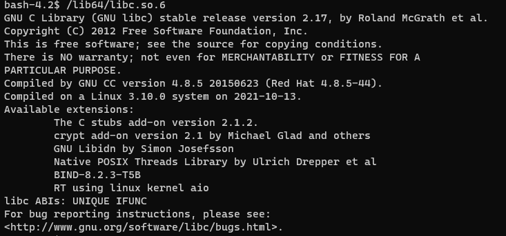
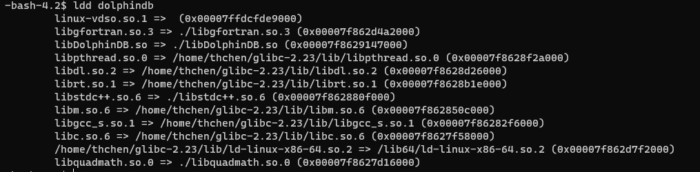

基于 Glibc 升级的性能优化案例
在高并发查询、查询需要涉及很多个分区的情况下，低版本的 glibc（低于 2.23）会严重影响查询性能。需要升级 glibc 解决该问题优化性能。我们撰写了本文，通过 patchelf 工具修改可执行文件和动态库的 rpath，达到无需升级系统便可以使用高版本 glibc 的目的。
1. 概述
在高并发查询、查询需要涉及很多个分区的情况下，需要频繁读取磁盘文件，而旧版 glibc（低于 2.23）的fseek函数性能低下，导致查询任务堆积，CPU 利用率却不高。需要升级 glibc 解决该问题。由于系统 glibc 通常和系统版本绑定，所以升级系统 glibc 需要升级系统。但是升级系统步骤繁琐，故我们撰写了本文通过 patchelf 工具修改可执行文件和动态库的 rpath，在动态链接时优先链接的高版本 glibc。从而无需升级系统便可以使用高版本 glibc。
2. 环境配置与数据模拟
2.1. 硬件配置
测试总共使用四台配置相同的服务器，分别命名为 P1、P2、P3、P4，具体硬件配置如表所示。
| 处理器 | 核数 | 内存 | 操作系统 | 硬盘 | 网络 |
|---|---|---|---|---|---|
| Intel(R) Xeon(R) Gold 5320 CPU @ 2.20GHz | 128 | 754 GB | CentOS Linux release 7.9 | SSD | 万兆局域网 |
2.2. 集群配置
以下测试中使用的 DolphinDB Server 版本为 2.00.9.3。
基于四台服务器搭建双副本高可用集群，假设四台服务器名称分别为 P1、P2、P3、P4，P1、P2、P3 各部署一个控制节点、一个代理节点、一个数据节点，P4 部署一个代理节点、一个数据节点。
主要配置如下表：
| 配置项 | 值 |
|---|---|
| maxMemSize | 480GB |
| workerNum | 128 个 |
| TSDBCacheEngineSize | 100GB |
2.3. 模拟数据
2.3.1. 生成模拟数据
模拟数据为物联网测点数据，有 4 个字段，分别是 id、time、v、q，一天 28.8 亿条数据。数据库按照日期（按天）、id（HASH 128）分区。每个分区约 2250 万条记录。具体脚本见附件。
2.3.2. 模拟数据查询
我们模拟单个、20、40、60、100 个并发查询，查询内容为 4 天 1000 个随机 id 的点查询，理论上将包含 128x4 个分区。具体脚本见附件。
3. 升级 glibc
3.1. 查看本机 DolphinDB 使用的 glibc 版本
执行以下命令
ldd dolphindb找到 libc.so.6 的位置，在终端执行
/lib64/libc.so.6得到版本为如图（2.17，低于 2.23）
3.2. 下载或者编译高版本 glibc
3.2.1. 下载
- 可自行下载对应系统高版本的 glibc 库和 libgcc 库后手工提取。
- 或下载 DolphinDB 提供的压缩包（glibc 版本 2.23，Centos 7）。
- 注意：可能存在兼容性问题。
3.2.2. 编译
可以通过自行编译的方式解决高版本 glibc 的兼容性问题。
#下载 glibc 源代码
git clone https://sourceware.org/git/glibc.git
cd glibc
git checkout glibc-2.23
mkdir build
cd build
#具体路径需要自己选择，不要不添加路径或者选择系统库的路径，避免系统 glibc 被覆盖
../configure --prefix=/home/thchen/glibc-2.23
# -j 后面的数字要低于或者等于自己 cpu 的核数
make -j12
make install
#编译运行需要把系统的 /lib64/libgcc_s.so.1 复制到 /home/thchen/glibc-2.23/lib 里
cp /lib64/libgcc_s.so.1 /home/thchen/glibc-2.23/lib3.3. 解压高版本 glibc 到自定义位置
注意事项：
- 不要解压到系统 lib64、根目录等路径覆盖系统 glibc。
- 不要添加自定义 glibc 文件夹到
LD_LIBRARY_PATH环境变量。
#当前位置为 /home/thchen
tar -zxvf glibc-2.23.tar.gz3.4. 下载 patchelf
sudo yum install patchelf3.5. 文件备份
备份相关文件（dolphindb ，libDolphinDB.so，libgfortran.so.3，libopenblas.so.0，libquadmath.so.0，libstdc++.so.6，libtcmalloc_minimal.so.4）
#备份文件，需要到 dolphindb 可执行文件下的目录
cp dolphindb dolphindb.bak
cp libDolphinDB.so libDolphinDB.so.bak
cp libgfortran.so.3 libgfortran.so.3.bak
cp libopenblas.so.0 libopenblas.so.0.bak
cp libquadmath.so.0 libquadmath.so.0.bak
cp libstdc++.so.6 libstdc++.so.6.bak
cp libtcmalloc_minimal.so.4 libtcmalloc_minimal.so.4.bak3.6. 修改文件的 rpath 和 interpreter
- 关闭 DolphinDB
- 根据高版本 glibc 的路径，修改以下文件的 rpath：
dolphindb，libDolphinDB.so，libgfortran.so.3，libopenblas.so.0，libquadmath.so.0，libstdc++.so.6，libtcmalloc_minimal.so.4
#修改 rpath，具体路径要看高版本 glibc 的路径
patchelf --set-interpreter /home/thchen/glibc-2.23/lib/ld-linux-x86-64.so.2 \
--set-rpath ./:/home/thchen/glibc-2.23/lib dolphindb
patchelf --set-rpath ./:/home/thchen/glibc-2.23/lib libDolphinDB.so
patchelf --set-rpath ./:/home/thchen/glibc-2.23/lib libgfortran.so.3
patchelf --set-rpath ./:/home/thchen/glibc-2.23/lib libopenblas.so.0
patchelf --set-rpath ./:/home/thchen/glibc-2.23/lib libquadmath.so.0
patchelf --set-rpath ./:/home/thchen/glibc-2.23/lib libstdc++.so.6
patchelf --set-rpath ./:/home/thchen/glibc-2.23/lib libtcmalloc_minimal.so.43.7. 验证 glibc 库路径
使用 ldd dolphindb 命令验证当前 glibc 库的路径。当运行结果显示其路径为高版本 glibc 路径时，说明前述修改成功。
4. 性能测试与对比
通过在升级前和升级后运行 2.3.2 节的模拟查询，我们得到了以下数据：
| 查询方法 | 查询用时 (glibc 2.17) | 查询用时 (glibc 2.34) | 加速比 |
|---|---|---|---|
| 单查询 | 3,241 ms | 2,007 ms | 1.61 |
| 20 并发查询 | 33,346 ms | 15,313 ms | 2.18 |
| 40 并发查询 | 85,144 ms | 24,672 ms | 3.45 |
| 60 并发查询 | 134,065 ms | 28,793 ms | 4.66 |
| 100 并发查询 | 224,902ms | 46,938 ms | 4.79 |
通过升级 glibc，DolphinDB 前后查询加速比为 1.61 到 4.79 倍。在并发情况下性能提升更加明显。
5. 小结
针对高并发查询，当查询需要涉及多个分区时，如果查询任务积压但 CPU 利用率不高，可以先确定 glibc 的版本。如果 glibc 版本低于 2.23，则可以按照本方案进行升级，这可能会带来明显的性能提升。